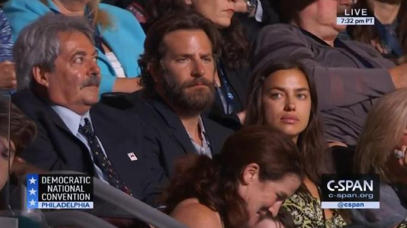
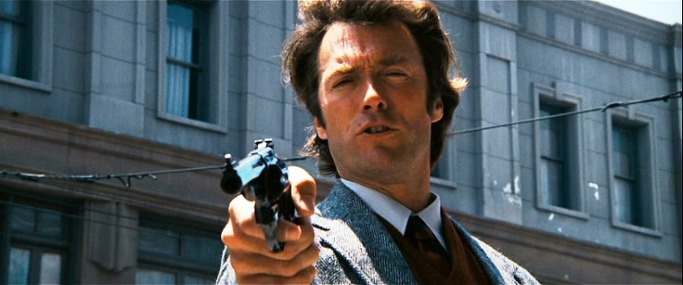
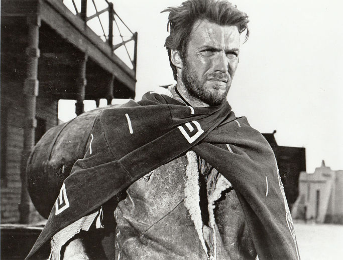
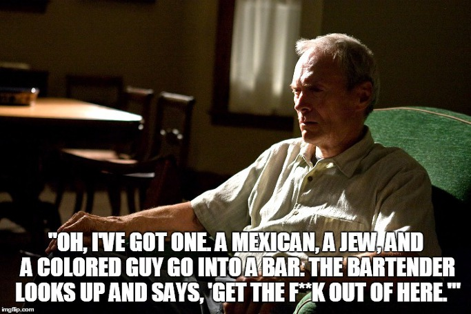

그랜 토리노(Gran Torino) - 이스트우드가 보여주는 보수의 가치
게시: 2017-01-22T16:44:42+09:00
자랑은 아니지만, 저는 이번에 트럼프가 당선될 것이라고 제 직장 내에서 떠들고 다녔고, 다행스럽게도(?) 맞췄습니다. 제가 트럼프 당선을 예측한 것은 사실 별 혜안이 있어서가 아니었습니다. '아메리칸 스나이퍼'라는 영화에서 전쟁으로 고뇌하지만 국가와 전우들을 위해 싸웠던 미국의 전쟁 영웅을 연기했던 브래들리 쿠퍼라는 배우가 민주당 전당 대회에 참석한 것을 두고 벌어진 사건을 보고 '아, 미국에도 돌I들이 많구나'라는 것을 느꼈기 때문이었습니다. 원래 모든 국민은 자신에게 걸맞은 정부를 가진다고 하쟎습니까 ?

(왜인지는 모르겠지만, 많은 미국 공화당원들은 저런 전쟁 영웅을 연기한 배우는 당연히 공화당원일 것이라고 생각했던 모양입니다. 그런데 쿠퍼가 저렇게 멋진 수염까지 기르고 민주당 전당 대회에 참석한 모습을 보고 배신감을 느낀 사람들이 떼거지로 그의 페북이나 트위터에 악담과 비난을 퍼부어댔다고 합니다.)
그 아메리칸 스나이퍼라는 영화의 제작과 감독을 맡은 사람은 클린트 이스트우드입니다. 요즘 젊은이들도 클린트 이스트우드를 모르는 사람은 많지 않으리라 봅니다. 주로 서부 영화와 '더티 해리' 시리즈에 출연해 유명해진 키크고 잘 생긴 배우지요. 그러나 이 배우가 진짜 영화인으로 칭송받기 시작한 것은 이제 남자로서의 매력이 다 쇠락하고 난 노인이 되어서였습니다. 'Unforgiven'이라는 기존의 서부 영화와는 완전히 다른 컨셉의 사실적 서부극을 감독/제작/주연하면서부터 이 사내에 대해 비평가들이 찬사를 보내기 시작했습니다. 저도 이 영화 극장에서 봤었는데, 매우 재미있었습니다. 특히 불우한 환경의 여성 권투 선수 이야기인 'Million Dollar Baby'를 감독/제작/주연하고는 아카데미 감독상과 작품상을 받았을 뿐만 아니라, 남우주연상 후보에도 올랐습니다.


(젊은 시절 클린트 이스트우드입니다. 정말 남자답게, 잘 생긴 배우입니다. 아래는 더티 해리 시리즈에서의 모습입니다.)
(밀리언 달러 베이비에서의 이스트우드입니다. 세월에는 장사 없다고, 이스트우드도 이젠 할배가 되었습니다. 그러나 진정한 인간의 내면에는 클래스가 있는 법이고, 그 클래스는 세월이 가면서 더욱 빛나는 법입니다.)
원래 잘 생기고 똑똑하고 점잖은 사람은 당연히 진보를 지지할 것이라고 착각들 하지만, 클린트 이스트우드는 흔들림없는 공화당원이고, 놀랍게도 이번 대선에서 도널드 트럼프를 지지했습니다. 도널드 트럼프를 열성적으로 지지한 것은 아니고, 힐러리처럼 '정치를 이용해 많은 돈을 버는 부정직한 사람보다는 낫다' 라는 자세였지요. 트럼프의 막말 파동에 대해서는 '그가 바보같은 말을 많이 한 것은 사실'이라면서 '그냥 빨리 넘기고 극복합시다. 역사적으로 비극적인 시대에요' 라고도 했지요.
그런 충성스러운 공화당원인 이스트우드에 대해, 저는 매우 좋은 시각으로 보고 있습니다. 예술가의 작품에는 그 예술가의 가치관이 스며들 수 밖에 없는데, 그의 영화에 나타난 가치관은 저도 매우 존중하고 떠받드는 것들이기 때문입니다. 저는 스스로를 진보적이라고 평가하고 있습니다만, 더 뛰어난 사람, 더 열심히 일한 사람이 더 많은 것을 누릴 자격이 있으며 '적절한' 빈부격차는 사회 발전의 촉매가 된다라고 믿습니다. 그런 점에서 저를 보수파라고 부르셔도 저는 할 말이 없고, 제대로 된 바른 보수라면 저도 쌍수를 들어 환영합니다. 그리고, 이스트우드의 영화 속 대사에서, 저는 올바른 보수가 가져야 할 두 가지 가치관을 보았습니다.
그 영화는 2008년작 그랜 토리노(Gran Torino)라는 영화입니다. 역시 이스트우드가 주연/감독/제작을 했고, 흐멍이라는 라오스계 소수 민족 소년과 어느 6.25 참전 노친네의 우정 이야기입니다. 이스트우드에게 누군가가 이 영화 대본을 주면서 '이야기는 재미있는데, 정치적으로는 올바르지 않은 영화'라고 평을 했답니다. 이스트우드는 밤에 이 대본을 읽어보고는 즉각 영화화하자고 했지요. 그렇게 'politically correct' 하지 않았기 떄문에, 미국내 흐멍족 사회에서는 이 영화에 대해 찬사도 있었으나 비난도 많았습니다. 저는 이 영화 매우 재미있게 보았습니다. 그리고, 거기에서 본 이 대사들이 정말 인상 깊었습니다.

(이 영화에는 확실히 politically correct 하지 않은 대사들이 많이 나옵니다. 이 영화 속에서, 이스트우드는 흐멍족 깡패들에게 M1 소총을 겨누면서 '난 한국 전쟁에서 너희 같은 gook들을 존나 쏴죽였다'라며 으르렁거리는 장면도 나옵니다. 국 gook이라는 멸칭은 동아시아인들을 가리키는, 흑인으로 따지자면 니거 같은 멸칭인데, 이는 한국 전쟁에서 생겨나 널리 퍼진 단어라고 합니다. 믿거나말거나...)
이 영화에서 이스트우드가 맡은 '월트'라는 노인은 카톨릭입니다만 와이프가 죽은 이후 고해 성사를 전혀 하지 않습니다. 교구 신부는 그 와이프의 유지를 받들어 계속 월트에게 고해 성사를 시키려고 노력합니다만 월트는 전혀 따르지 않았는데, 갑자기 월트가 신부를 찾아와 고해 성사를 하겠다고 나섭니다.
자노비치 신부 : 마지막으로 고해를 하신 지 얼마나 되었지요 ?
월트 : 백만년 전이요(Forever). 제게 은총을, 신부님. 저는 죄를 지었습니다.
자노비치 신부 : 성도님의 죄가 무엇입니까 ?
월트 : 1968년, 직장 크리스마스 파티에서 베티 자블론스키에게 키스를 했습니다. 그때 (자기 와이프인) 도로시는 다른 주부들과 이야기를 하고 있었고요.
자노비치 신부 : 예, 계속 말씀하세요.
월트 : 저는 900달러의 이윤을 남기고 모터 보트를 한대 팔았는데, 그에 대한 세금을 내지 않았습니다. 그건 도둑질이나 마찬가지였습니다.
자노비치 신부 : 예, 좋습니다.
월트 : 마지막으로, 저는 한번도 제 두 아들과 가깝게 지내지 못했습니다. 전 걔들을 잘 알지 못했고, 어떻게 가깝게 지내야 하는지도 몰랐어요.
자노비치 신부 : 그것 뿐인가요 ?
월트 : 그것 뿐이냐니 그게 뭔 소리요 ? 몇 년 동안이나 신경이 쓰였는데.
여기서 이스트우드가 생각하는 진정한 보수적 가치가 보이시나요 ? 올바른 납세와 가족에 대한 진정성, 그 두 가지라고 저 나름대로 판단했습니다. 그 두가지는 저도 매우 중요시하는 것입니다. 자기가 쓰던 모터 보트를 남에게 팔아서 이익이 좀 났다고 해서 소득 신고를 하는 사람은 거의 없을 것입니다. 그러나 월트(클린트 이스트우드) 생각에는 그에 대한 세금을 안 낸 것이 평생 자신을 괴롭혀 온 죄였던 것입니다. 물론 사람은 성인군자가 아닌지라 탈세도 하고 다른 여자와 썸도 타는 일이 생길 수 있습니다만, 그건 부끄럽게 생각하고 죄책감을 느낄 일이지 그걸 당연시하고 '내가 대체 뭘 잘못했다는거냐' 라고 뻔뻔스럽게 나설 일은 아니지요.
우리나라의 보수들도, (사실 이건 보수 진보 따질 일이 아닌데), 제발 세금 좀 똑바로 내는 것에는 찬성을 해줬으면 합니다. 세금을 제대로 내지 않는 것은, 진짜배기 보수주의자 이스트우드 형님의 말씀처럼, 나라 창고에서 도둑질을 하는 일입니다. 최소한 탈세하다 걸리면 '잘못 했습니다'라는 말이 나와야지, '기업을 탄압해서 나라가 잘 돌아가겠냐'라며 언론 동원해서 강짜부리는 것은 너무나 추합니다.